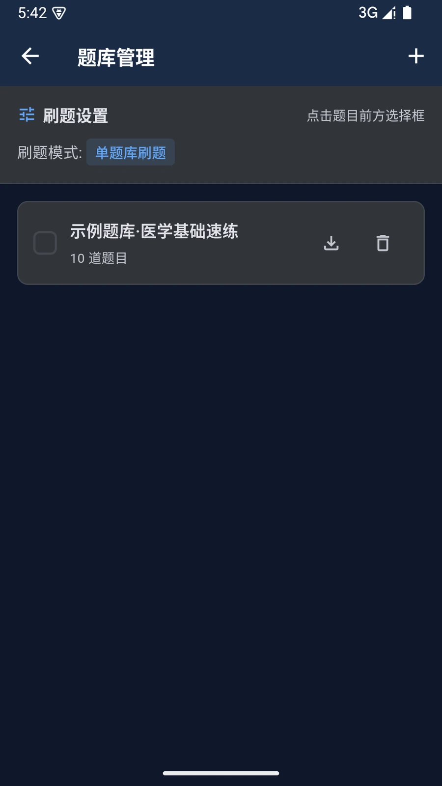
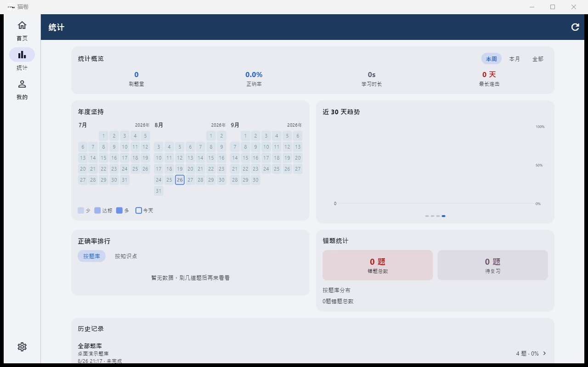
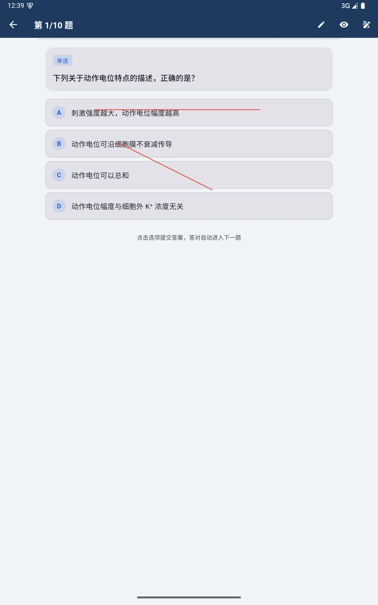
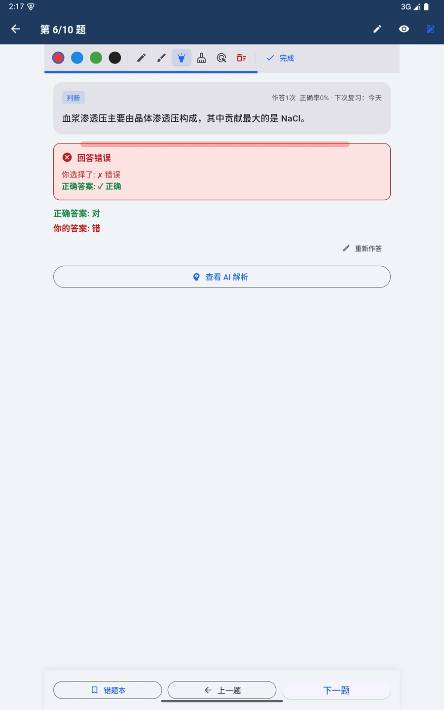
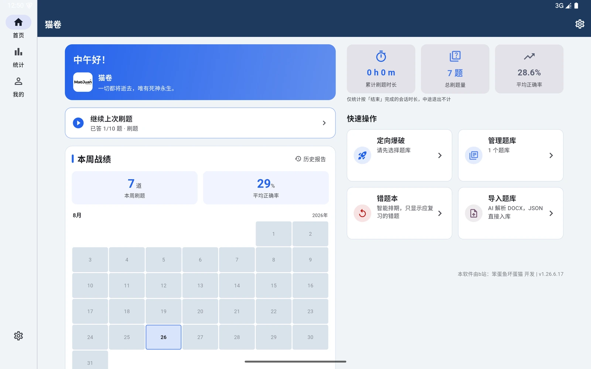
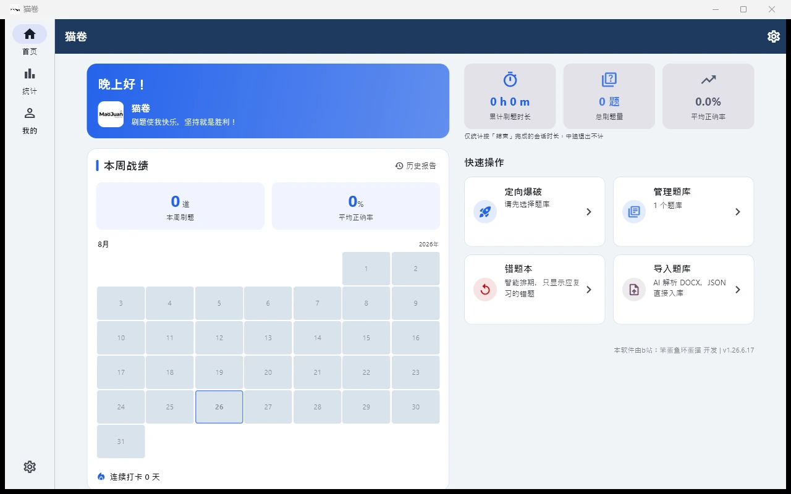
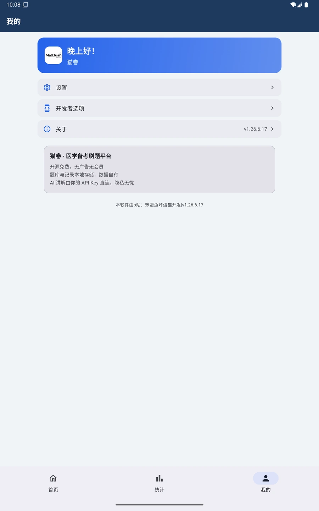

猫卷是一款本地优先的 AI 备考刷题 App。题库、错题、复习进度全部存在你自己的设备里， 离线可用、随时备份迁移；AI 逐题讲解由你自持的 API Key 直连，学习数据不经过任何第三方服务器。
不是再做一个题库 App，而是把"学习资产的所有权"还给备考的人。
主流考试平台按科目收费、年费数百到数千元，题库内容封闭；停止续费后，学习记录也带不走。
错题、笔记、学习轨迹全部锁在云端账号里。平台改规则、下架题库，你的努力就可能归零。
Anki 类工具制卡繁琐、缺考试题型和题目讲解；通用 AI 问答又没有错题管理和复习排期。
不用一题一题手工录入。选择 DOCX 或 JSON 文件，猫卷自动识别题目、选项、答案与解析，生成可编辑的预览，确认后入库。
Isolate 独立线程做文档解析；archive 解包 DOCX（本质是 ZIP）、xml 解析 word/document.xml 提取段落文本；AI 解析走 OpenAI 兼容的 Chat Completions 接口。1.、第N题、（1） 等题号起始行，把完整题目装进一个块（上限 2000 字），切点永远落在题目之间，绝不切断一道题；② 3 路并发 worker 池解析各块，结果按块号稳定回收；③ 逐级降采样重试：输出超限时把 token 上限从 8192 → 4096 → 2048 逐级下调重试；④ 截断 JSON 抢修：解析失败时从尾部回溯补 } 闭合，挽救前面已完整的题目；⑤ 失败的块会明确报出原因，不谎报"解析完成 0 题"。多题库并存、按需勾选、随时导出。每个题库的题量、正确率一目了然，重名会自动编号避免混淆。
sqflite）作为唯一数据源，题目/会话/记录分表存储，外键开启 PRAGMA foreign_keys=ON 实现级联删除。question_banks 表为根，题目挂在 questions.bank_id 外键上；删除题库时由数据库外键级联清理题目、作答记录、错题、复习卡与批注，避免出现"孤儿数据"污染统计。导出时组装 {format, name, count, questions} 结构，带格式标记 maojuan-quiz-questions，导入端校验通过才入库，形成闭环。
正常刷题用来检测、练习模式用来模考、背题模式用来快速过题。同一套题目，三种节奏。
QuizMode 枚举驱动），抽题走 SQL ORDER BY RANDOM() 随机；会话与题序落库到 quiz_sessions + session_questions 表。LIMIT 完成，避免全量取回再截断；② 会话落库保存题目顺序，实现断点续刷的精确还原；③ 练习模式答案先收集在内存 Map、零落库，交卷时才批量判定写库；④ 背题模式 persistSession:false，全程不产生任何统计污染；⑤ 限时归零先关弹窗防竞态，再自动交卷。不只是选择题。判断题、填空题、名词解释、简答题、问答题都能练，而且判分不是简单的字符串相等。
judgeAnswer 判定函数按题型分派，刷题与练习共用同一套逻辑，保证判分一致。不正确/不对/错误/×/X/F/FALSE → 错，正确/对/√/T/TRUE → 对，其中否定词优先匹配，避免"不对"被当成"对"；② 多选题：按中英文逗号、顿号、分号、空格拆分后转大写去重，集合比较忽略顺序；③ 填空题：按分号拆空、逐空去标点比对，空数不一致直接判错；④ 主观题：去标点后做双向包含匹配，且对 3 字以内答案（如"细胞壁"）改为精确相等并豁免"过短判错"。每一道题的解析都按"题眼破题法"四步拆解，模拟一个老师在旁边讲题的过程，而不是甩一段标准答案。
deepseek-chat（OpenAI 兼容接口），请求走 json_object 结构化输出、temperature 0.1 保证解析稳定；结果落 ai_cache 表，question_id 唯一。isAiError）绝不入缓存，防止一次断网把"请求失败"永久固化成解析结果；解析支持一键重新生成。解析里哪一句没懂，就接着问。你的提问和 AI 的回答以对话气泡呈现，一问一答都留在题目旁边，下次打开还在。
follow_up_messages（question_id / role / content / created_at），按题查询升序最多 50 条；回复渲染用自研轻量富文本渲染器。错题本内置 FSRS-5 间隔重复算法：按你的遗忘曲线计算每道错题的下次复习时间，到期的才出现，避免"反复刷已经会的"。
fsrs_cards 表，以 question_id 为主键。R = exp(ln(0.9) × 已过天数 / 稳定性) 计算，据此更新每张卡的"稳定性"与"难度"两个核心参数；② 行为自动评分：答错 → Again；答对且 <3 秒 → Easy；3–10 秒 → Good；≥10 秒 → Hard，用户无需手动打分；③ 间隔计算：下一次间隔约为 稳定性 × (9/难度 − 1) 天，向上取整至少 1 天，稳定性与难度分别 clamp 在合理区间防极端值；④ 改判补记：修正历史作答时，在同一事务内同步更新复习卡，保证算法状态与记录一致。刷题量、正确率、学习时长、连续打卡、错题分布……所有数据在本地实时计算，用图表讲清楚你的学习状态。
CustomPainter 自绘（无图表库依赖），数据由 SQL 聚合查询在设备端完成。
直接在题目上圈关键词、划重点、写推导。笔迹按题目保存，切题、重启、换设备都不会丢。
CustomPaint + Listener 捕获指针事件；笔迹数据存 question_annotations 表，复合主键 (question_id, device_id)。

长时间刷题，界面得顺眼。五套配色风格各配一套深色变体，可跟随系统自动切换。
ColorScheme.fromSeed 以强调色为种子生成完整配色；主题扩展 ThemeExtension<AppThemeColors> 承载语义色；选择持久化到 SharedPreferences。大屏不是简单拉伸。窗口够宽时界面自动变成左右并排布局，题区、解析、列表各就各位。
LayoutBuilder 实时监听可用宽度；断点参照 Material 窗口尺寸分类；同一套 Flutter 代码构建 Android 与 Windows。AdaptivePair 组件在可用宽 ≥900 时自动左右并排、否则上下堆叠，拖动窗口即时重排；③ 内容限宽：普通内容最大 640、宽屏二级页最大 1200，底部弹窗最大 480，避免大屏出现超长文本行；④ 页面用统一的自适应容器居中限宽，无需每个页面各自处理。

没有云账号，也能多设备用。两台设备连同一个 Wi-Fi，自动发现彼此并交换题库与刷题进度，全程在局域网内完成。
dart:io 实现，无第三方网络框架：UDP 三通道发现 + 本机 HttpServer 交换数据；Android 侧申请 MulticastLock 保证能收到广播包。uid upsert，批注与错题按"（题目, 设备）"隔离共存绝不覆盖，外键按 uid 映射到本地自增 ID；⑥ 自动同步带冷却时间，也可手动"立即同步"。
没有账号体系，不采集个人信息。题库、错题、进度、批注全部存在本机 SQLite 数据库里，一键导出备份，换手机原样恢复。
pointycastle 的 AES-256-GCM 加密（密文自描述前缀 + base64）；Android 侧用 flutter_secure_storage 存入系统 Keystore；防篡改通过 MethodChannel 取 APK 真实签名比对；发布构建开启代码混淆。Flutter 单代码库覆盖 Android 与 Windows，所有 AI 与数据能力都在设备端与用户自持的 API 之间完成。
免费不等于将就。每一项改动都经过自动化测试与发布前校验，保证你手上的版本行为稳定、可追溯。
每次发版依次执行：静态分析（0 问题）→ 全量自动化测试（178 项）→ 混淆构建 → 组件 / 权限 / 文案 / 资源四维基线对照校验 → 签名校验。 其中基线校验会把当前版本与原版 APK 逐项比对，任何未审阅的差异都会被拦下，确保发出去的包可溯源、可回退。
无需注册，下载即用。导入一份文档，就能开始你的第一轮刷题。